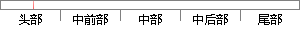

模型就是这样的效果，能完成分类、翻译、写邮件等任务，且不需要或只需要很少特定领域的数据做微调。
片段位置图

相似结果|
相似片段 1：了深层语义信息，然后用训练好的预训练模型去完成特定的任务，比如文本分类、阅读理解、命名实体识别等，这时候只需要简单地修改输出层，再用自己的数据对模型参数进行微调。预训练模型最大的好处就是泛化能力强，不需要
|
※ 片段修改建议 ※
近似词参考：- 模型：模子
- 就是：便是
- 这样：如许
- 效果：结果
- 成分：成份 身分
- 任务：使命 义务
- 领域：范畴
系统自动生成语句：模子便是如许的结果，能完成份类、翻译、写邮件等使命，且不需要或只需要很少特定范畴的数据做微调。
注：本片段修改建议为系统自动生成，仅供参考。